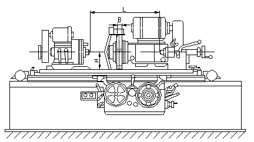
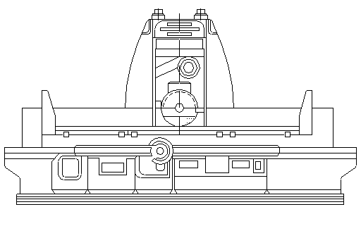
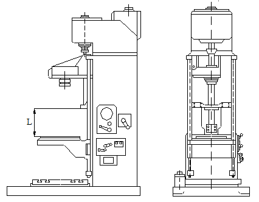

Шлифовальный станок, в металлообработке — металлорежущий станок для обработки заготовок абразивным инструментом.
В соответствии с принятой для металлорежущих станков классификацией шлифовальные станки подразделяют на кругло- и внутришлифовальные (в т. ч. бесцентрово-шлифовальные, планетарные), специализированные, плоскошлифовальные и др., работающие абразивным инструментом (зубо- и резьбошлифовальные станки относят к группе зубо- и резьбообрабатывающих станков). Специфика используемого инструмента предъявляет к конструкции и конструкционным материалам некоторые дополнительные требования: виброустойчивость, износостойкость, интенсивный отвод абразивной пыли.
Наибольшее распространение получили круглошлифовальные станки. На этих станках заготовку устанавливают на центрах или в патроне и приводят во вращение навстречу шлифовальному кругу; вместе со столом станка она может совершать возвратно-поступательное движение. Шлифовальный круг в конце каждого (или двойного) хода стола получает поперечное перемещение на глубину резания. На круглошлифовальных станках обычно шлифуют наружные цилиндрические и конические поверхности и торцы заготовок. На врезных круглошлифовальных станках шлифование наружных цилиндрических, конических и фасонных поверхностей производится широким кругом (шире размера заготовки); продольная подача здесь отсутствует.
Внутришлифовальные станки предназначены для шлифования внутренних поверхностей вращения. Наиболее распространены внутришлифовальные станки, у которых обрабатываемая заготовка вращается вокруг оси шлифуемого отверстия, а шлифовальный круг — вокруг своей оси. Продольную и поперечную подачи осуществляют кругом. При обработке отверстий крупных заготовок, которые привести во вращение трудно, применяют планетарные внутришлифовальные станки. В этих станках шлифовальный круг вращается вокруг своей оси и вокруг оси шлифуемого отверстия одновременно.
Бесцентрово-шлифовальные станки предназначены для шлифования наружных и внутренних цилиндрических поверхностей. При шлифовании наружных поверхностей заготовку (ряд состыкованных заготовок) помещают между двумя абразивными кругами — шлифовальным (режущим) и ведущим и прижимают к опорному ножу. Вследствие наклонной установки ведущего круга за счёт сил трения заготовка не только вращается, но и поступательно перемещается (продольная подача). Поперечную подачу осуществляют также ведущим кругом. При шлифовании внутренних поверхностей (например, колец подшипников) заготовки устанавливают между двумя поддерживающими роликами и ведущим кругом , который и вращает заготовку. Шлифовальный круг, если необходимо, перемещается вдоль и поперёк оси отверстия или только радиально (при врезном шлифовании). Бесцентрово-шлифовальные станки менее универсальны, но конструктивно проще и производительнее кругло- и внутришлифовальных.
Плоскошлифовальные станки предназначены для обработки плоскостей заготовок периферией или торцом шлифовального круга. На таких станках, работающих периферией круга, стол с закрепленной на нём заготовкой совершает возвратно-поступательное или вращательное движение, а вращающийся шлифовальный круг получает поперечную подачу на каждый ход или оборот стола, а также перемещение на глубину резания. В плоскошлифовальных станках, работающих торцом шлифовального круга, в отличие от станков, работающих периферией круга, поперечная подача отсутствует, т.к. диаметр круга больше поперечного размера обрабатываемой заготовки (врезное шлифование).
Специализированные шлифовальные станки предназначены, как правило, для обработки деталей заданной формы, например для шлифования шеек коленчатых валов, деталей штампов, шаблонов, шлицевых деталей и т.д. Обработку заготовок на этих станках осуществляют в основном методом копирования, реже методом огибания.
В общую группу шлифовальных станков входят также станки: притирочные, полировальные, доводочные, заточные, шлицешлифовальные, хонинговальные и др., работающие абразивным инструментом.
Хонинговальный станок, шлифовально-притирочный металлорежущий станок для хонингования. Различают хонинговальные станки: вертикальные, горизонтльные и наклонные, одно- и многошпиндельные, для внешнего и внутреннего хонингования, универсальные, полуавтоматические и автоматические. В шпинделе хонинговального станка закрепляется режущий инструмент — хонинговальная головка (хон), оснащенная мелкозернистыми абразивными брусками. Главное движение инструмента станка (вращательное.) создаётся отдельным электродвигателем или гидротурбиной, а движение подачи (прямолинейное, возвратно-поступательное) — обычно гидроприводом. Кроме того, имеется механизм радиальной подачи абразивных брусков в хонинговальной головке, который обеспечивает быстрый подвод брусков к обрабатываемой поверхности, а также автоматическую компенсацию их износа во время работы. Наиболее распространены полуавтоматические хонинговальные станки для хонингования сквозных и глухих отверстий.